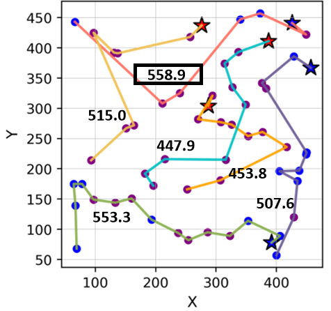
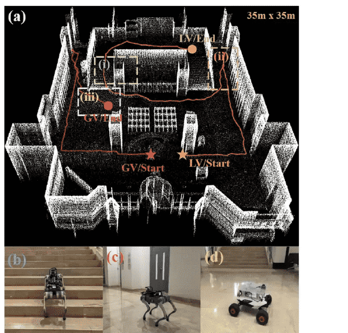

News
Earlier news
Research
I am interested in multi-agent and robot systems, heuristic search, task and motion planning, and
robot learning. Most of my work asks how a team of physically different robots should divide up and
order the work in front of them, and how to compute those plans fast enough to run on real hardware.
Papers where I am a (co-)first author are highlighted.
|
|

|
Algorithms and Solvers for Min-Max Constrained Heterogeneous Multi-Robot Routing Problems
Yiyu Wang,
Yunxiang Yao,
Shizhe Zhao,
Zhongqiang Ren
IROS, 2026
paper to be released /
package website
An anytime focal-search solver for min-max heterogeneous multi-robot routing under capacity,
resource, and time-window constraints, implemented in C++ and released as the PyRCH Python package.
|
|

|
HEHA: Bounded Suboptimal Planning for Constrained Routing and Its Use in Heterogeneous Multi-Robot Exploration of Unknown Environments
Longrui Yang†, Yiyu Wang†,
Jingfan Tang†, Yunpeng Lv,
Shizhe Zhao,
Chao Cao,
Zhongqiang Ren
† Equal contribution
MRS Poster Paper, 2025
In submission to T-RO, 2026
paper /
demo
Path planning for autonomous exploration of an unknown environment by drones, wheeled, and legged
robots with different terrain-traversal capabilities. HEHA splits the problem into global routing,
solved by a bounded-suboptimal anytime focal search that minimizes the makespan under traversability
constraints, and a heterogeneity-aware local planner that avoids duplicated exploration.
|
|
Software
|
PyRCH — a Python package wrapping our C++ anytime
focal-search solver for heterogeneous multi-agent routing.
pip install PyRCH
|
|
Teaching
|
Teaching Assistant, ME2110J (Introduction to Solid Mechanics), Shanghai Jiao Tong University.
|
|
Services
|
Delegated reviewer, IEEE Robotics & Automation Letters (RA-L).
Delegated reviewer, IROS.
|
|
{kind=link}
{kind=link}